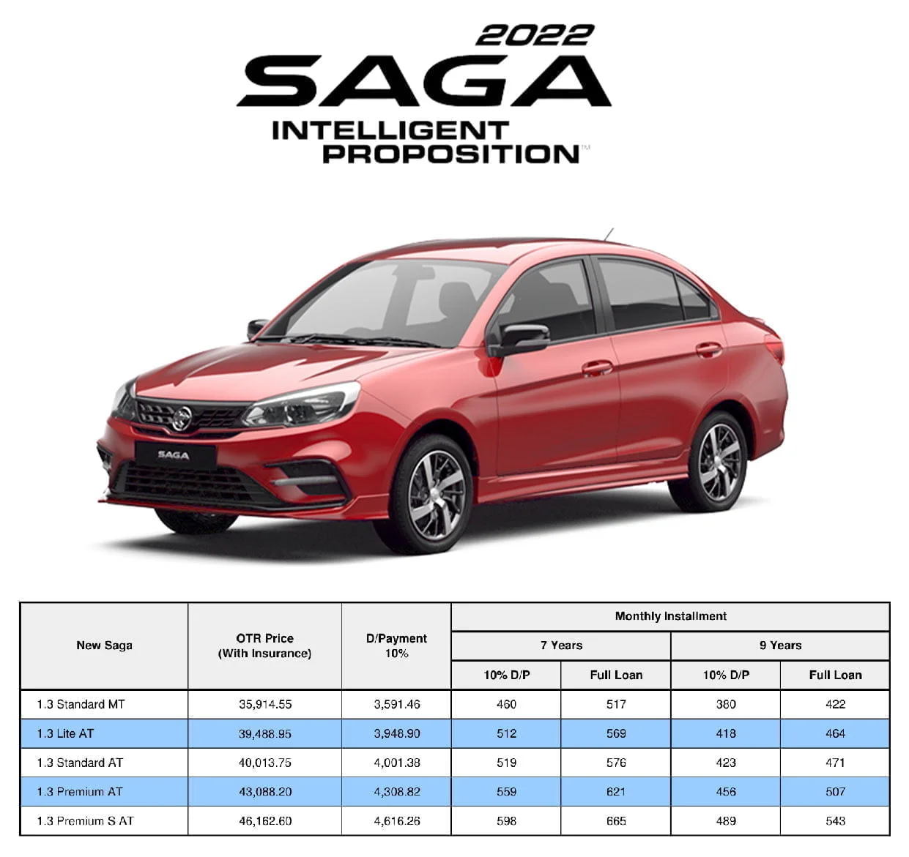

Best Seller Car
ABOUT PROTON

PROTON HISTORY
PROTON began as Malaysia's national car project, founded with the aim to spearhead the nation’s economic development and lay the foundations for the local automotive industry. The birth of the Proton Saga in 1985 marked the beginning of a colourful journey for the national car brand as it was constantly promoted as the "Pride of the Nation". PROTON continues to progress as a fully fledged manufacturer that leads the nation’s automotive industrialisation effort and ecosystem. Fast forward to 2017, PROTON entered the next phase of its plan to be a global and respected automotive brand with the signing of a partnership between its two principals, DRB-HICOM and Zhejiang Geely Holding Group. Today, PROTON continues to delight its customers with cars anchored on its brand promise of INSPIRING CONNECTIONS and developed on its core values of always delivering Innovative Technology, Reliability and International standards.
The concept of a national car was conceived in 1979 by then-Deputy Prime Minister of Malaysia, Dato' Seri Dr. Mahathir bin Mohamad, now Tun Dr. Mahathir Mohamad, with the goal of enhancing the Malaysian automotive industry.The National Car Project was approved by the Cabinet in 1982, leading to the equity investment of Proton on May 7, 1983, with Mitsubishi Corporation for the future of the company. At its creation, it was wholly owned by the government of Malaysia through Khazanah Nasional. It was headed by its founder, Dr. Mahathir. Proton approached Mitsubishi Motors between 1983 and 1984 and brokered a joint venture between both companies for the production of the first Malaysian car. The result of the collaboration was the Proton Saga, which launched on July 9, 1985. The Proton Saga was based on the second-generation 1983 Mitsubishi Lancer Fiore 4-door saloon, powered by a 1.3-liter Mitsubishi Orion 4G13 engine. The first Proton Saga to roll off the production line in Shah Alam is preserved in the National Museum as a symbol of the beginning of the Malaysian automotive industry. Sales of the new Saga outstripped supply, and Proton struggled to meet the growing demand, but by mid-1986, it had captured a 64% majority domestic market share in the below 1600cc segment. Later in October 1987, a hatchback variant called the Proton Saga Aeroback was launched and had a more powerful 1.5L Mitsubishi 4G15 engine and a redesigned rear-end. Exports to Ireland began in 1988, and by March 1989, Proton had entered the United Kingdom car market with the Saga saloon and hatchback duo, where the Malaysian company set the record for the "Fastest Selling Make of New Car Ever to Enter the United Kingdom." Proton's sales declined during the late 1980s as a result of the worldwide economic recession, and the lack of technical expertise in Proton's management.Kenji Iwabuchi, a former Mitsubishi Motors executive, was appointed as the managing director of Proton in 1988.

Proton Malaysia

Proton Malaysia